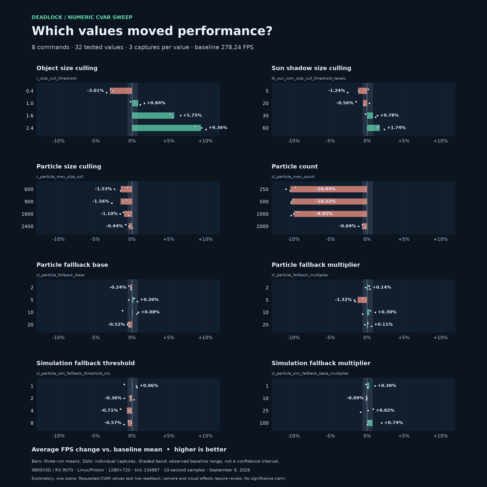

Which CVAR values
moved performance?
Eight numeric commands, four values each. A follow-up to the 100-CVAR screen, including the particle fallback and size controls requested by Sqooky.
{kind=link}
{kind=link}
These are observed differences in one replay scene, not proven optimal settings. Every capture is included. The engine did not expose live readbacks for the tested CVARs; camera and visual effects still require review.
What the measurements show
r_size_cull_threshold 2.4 had the highest observed mean: 304.29 FPS (+9.36%), with 157.87 FPS at the 1% low. The four tested values showed increasing average FPS. This is the top tested value, not an established optimum; visual effects still need checking.
cl_particle_max_count at 250, 500 and 1000 averaged roughly 10% below baseline. At 2000 the difference was -0.69%. The lower tested counts produced the largest observed losses.
All four r_particle_max_size_cull candidates averaged below baseline (-1.56% to -0.44%). Fallback candidates ranged from -1.32% to +0.74%, with no clear value trend. lb_sun_csm_size_cull_threshold_texels 60 averaged +1.74%.
Baseline captures were 280.25 → 276.61 → 277.86 FPS, a 1.31% range relative to their mean. Small differences are therefore hard to distinguish from run variation and drift. These observations do not isolate CPU savings from GPU changes.
Every tested value, on the same scale

Full measurements
Object size culling
r_size_cull_threshold| Value | Avg FPS | Δ FPS | 1% low | 0.1% low | P99 ms ↓ | FPS · rounds 1 / 2 / 3 | FPS CV |
|---|---|---|---|---|---|---|---|
| 0.4 | 269.87 | -3.01% | 139.73 | 114.65 | 6.616 | 270.1 · 271.0 · 268.6 | 0.45% |
| 1.0 | 280.59 | +0.84% | 146.80 | 116.26 | 6.274 | 277.6 · 282.8 · 281.3 | 0.96% |
| 1.6 | 294.24 | +5.75% | 153.06 | 117.80 | 5.918 | 292.7 · 296.6 · 293.5 | 0.71% |
| 2.4 | 304.29 | +9.36% | 157.87 | 124.07 | 5.720 | 302.1 · 304.5 · 306.3 | 0.69% |
Sun shadow size culling
lb_sun_csm_size_cull_threshold_texels| Value | Avg FPS | Δ FPS | 1% low | 0.1% low | P99 ms ↓ | FPS · rounds 1 / 2 / 3 | FPS CV |
|---|---|---|---|---|---|---|---|
| 5 | 274.79 | -1.24% | 143.68 | 114.61 | 6.445 | 278.6 · 274.9 · 270.8 | 1.41% |
| 20 | 276.68 | -0.56% | 144.43 | 116.65 | 6.393 | 274.0 · 279.0 · 277.0 | 0.92% |
| 30 | 280.40 | +0.78% | 145.53 | 114.46 | 6.275 | 277.6 · 282.2 · 281.4 | 0.87% |
| 60 | 283.08 | +1.74% | 147.35 | 117.15 | 6.251 | 282.5 · 282.0 · 284.8 | 0.53% |
Particle size culling
r_particle_max_size_cull| Value | Avg FPS | Δ FPS | 1% low | 0.1% low | P99 ms ↓ | FPS · rounds 1 / 2 / 3 | FPS CV |
|---|---|---|---|---|---|---|---|
| 600 | 273.99 | -1.53% | 141.77 | 112.12 | 6.463 | 276.5 · 271.6 · 273.9 | 0.90% |
| 900 | 273.89 | -1.56% | 137.30 | 96.87 | 6.462 | 276.1 · 275.0 · 270.6 | 1.07% |
| 1600 | 275.17 | -1.10% | 141.74 | 113.10 | 6.417 | 274.9 · 273.8 · 276.9 | 0.58% |
| 2400 | 277.02 | -0.44% | 144.60 | 117.64 | 6.390 | 275.8 · 277.0 · 278.3 | 0.46% |
Particle count
cl_particle_max_count| Value | Avg FPS | Δ FPS | 1% low | 0.1% low | P99 ms ↓ | FPS · rounds 1 / 2 / 3 | FPS CV |
|---|---|---|---|---|---|---|---|
| 250 | 249.18 | -10.44% | 138.69 | 113.04 | 6.668 | 251.0 · 247.5 · 249.1 | 0.70% |
| 500 | 249.80 | -10.22% | 138.60 | 114.89 | 6.662 | 250.4 · 249.6 · 249.4 | 0.22% |
| 1000 | 250.57 | -9.95% | 137.30 | 111.07 | 6.700 | 251.8 · 250.4 · 249.5 | 0.47% |
| 2000 | 276.32 | -0.69% | 143.80 | 114.96 | 6.400 | 276.5 · 275.0 · 277.5 | 0.46% |
Particle fallback base
cl_particle_fallback_base| Value | Avg FPS | Δ FPS | 1% low | 0.1% low | P99 ms ↓ | FPS · rounds 1 / 2 / 3 | FPS CV |
|---|---|---|---|---|---|---|---|
| 2 | 277.58 | -0.24% | 143.44 | 110.50 | 6.410 | 277.0 · 277.8 · 277.9 | 0.17% |
| 5 | 278.79 | +0.20% | 145.45 | 115.26 | 6.345 | 279.0 · 277.0 · 280.3 | 0.58% |
| 10 | 278.47 | +0.08% | 146.25 | 115.96 | 6.309 | 274.7 · 280.6 · 280.1 | 1.18% |
| 20 | 276.80 | -0.52% | 144.38 | 114.04 | 6.322 | 276.7 · 276.5 · 277.2 | 0.13% |
Particle fallback multiplier
cl_particle_fallback_multiplier| Value | Avg FPS | Δ FPS | 1% low | 0.1% low | P99 ms ↓ | FPS · rounds 1 / 2 / 3 | FPS CV |
|---|---|---|---|---|---|---|---|
| 2 | 278.64 | +0.14% | 143.98 | 114.26 | 6.320 | 279.0 · 277.6 · 279.3 | 0.32% |
| 5 | 274.56 | -1.32% | 143.34 | 115.31 | 6.410 | 276.6 · 273.4 · 273.7 | 0.65% |
| 10 | 279.08 | +0.30% | 145.48 | 114.83 | 6.319 | 279.5 · 281.3 · 276.5 | 0.87% |
| 20 | 278.56 | +0.11% | 143.46 | 115.15 | 6.354 | 278.4 · 277.4 · 279.9 | 0.45% |
Simulation fallback threshold
cl_particle_sim_fallback_threshold_ms| Value | Avg FPS | Δ FPS | 1% low | 0.1% low | P99 ms ↓ | FPS · rounds 1 / 2 / 3 | FPS CV |
|---|---|---|---|---|---|---|---|
| 1 | 278.42 | +0.06% | 145.37 | 115.16 | 6.334 | 275.3 · 279.9 · 280.1 | 0.97% |
| 2 | 277.25 | -0.36% | 143.68 | 115.21 | 6.365 | 277.5 · 275.3 · 279.0 | 0.67% |
| 4 | 276.28 | -0.71% | 143.81 | 115.77 | 6.387 | 273.8 · 277.1 · 277.9 | 0.77% |
| 8 | 276.66 | -0.57% | 143.40 | 113.51 | 6.407 | 276.8 · 278.0 · 275.2 | 0.51% |
Simulation fallback multiplier
cl_particle_sim_fallback_base_multiplier| Value | Avg FPS | Δ FPS | 1% low | 0.1% low | P99 ms ↓ | FPS · rounds 1 / 2 / 3 | FPS CV |
|---|---|---|---|---|---|---|---|
| 1 | 279.09 | +0.30% | 144.58 | 111.38 | 6.348 | 277.7 · 281.2 · 278.4 | 0.66% |
| 10 | 277.98 | -0.09% | 143.93 | 116.05 | 6.439 | 277.9 · 278.2 · 277.9 | 0.06% |
| 25 | 278.28 | +0.02% | 145.72 | 115.53 | 6.353 | 280.5 · 278.6 · 275.8 | 0.86% |
| 100 | 280.31 | +0.74% | 144.87 | 114.84 | 6.374 | 278.9 · 283.7 · 278.3 | 1.06% |
Methodology, verification and limits
- Each value changes one direct GameInfo ConVars assignment. The game restarts for every capture; configurations are restored after each run. Treatment order is shuffled with seed 134987.
- Three baseline captures occur at indices 1, 50 and 99. The original installed configuration is the baseline. The hidden CVAR defaults were not independently read back. No captures from the earlier screen are used in these averages.
- Each reported mean weights the three captures equally. Average FPS is 1000 divided by mean frame time within a capture. The 1% and 0.1% lows use the mean of their slowest frames. P99 is the 99th percentile of frame time. CV uses the sample standard deviation divided by mean FPS.
- All 99 source capture hashes, profile hashes, context keys and schedule entries were checked. The four reported performance metrics were recomputed from the raw capture windows and matched the saved records.
- Three repeats and one baseline per round support descriptive comparisons, not the tool’s bracketed statistical verdict. No confidence intervals or significance claims are presented. Differences between small candidate effects can reflect run variation, drift or multiple comparisons.
- All 96 treatment captures lack individual CVAR readback. All 99 retain the replay progression/camera review flag. File application does not prove engine effect. The CSV and JSON preserve the quality notes.
- FPS measurements do not isolate CPU time from GPU time. Fallback controls may interact or be inactive in this workload; they were tested individually. Frame-rate gains do not establish acceptable visual quality or gameplay cues.
Game build 24882156 · Session 20260906T035918Z-34a33c
Context SHA-256: c23d36e10d5552e641942e92ff4be72b23619fc0c467125170e813f48083c307
Provenance and regeneration instructions · Experiment design and candidate rationale · OptimizationLock